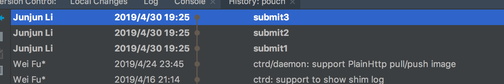
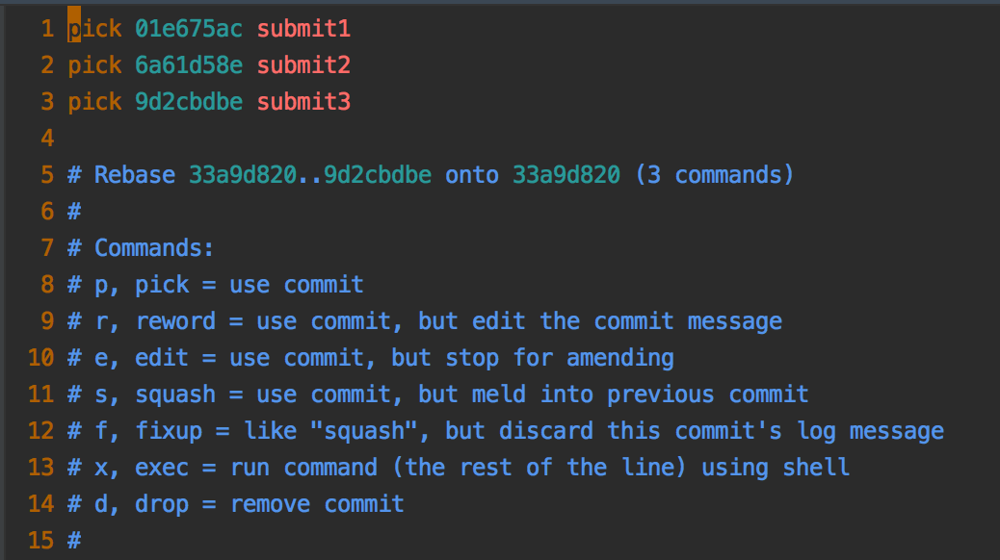
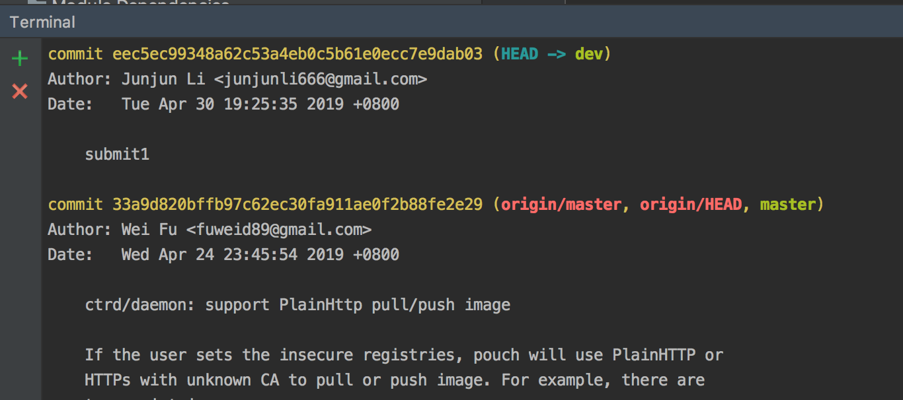

How to Merge Commits
背景，做一个小demo，写了十几个commits ，其实最终只要上传一个commits就可以。

那么如何将这些commit 合并成一个commit 呢？
# -i 打开交互模式，master 是 当前分支（dev） 相对于master 不一样的现实出来
pouch git:(dev) git rebase -i master
Successfully rebased and updated refs/heads/dev.

按照交互的提示， p 是保留的commit s 是合并入先前的commits d 删除这个commit f f 合并先前的分支，但是删除提示信息
对上图进行如下操作
pick 01e675ac submit
f 6a61d58e submit
f 9d2cbdbe submit
说明：为什么第一个分支是 pick 而不是 (s或者f)？ 因为如果全部都 s 的话，s 是合并至先前的commit。而 submit1 是第1个commit，没有先前的commit. 最终完成的结果如下： 